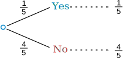
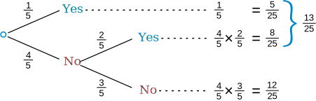
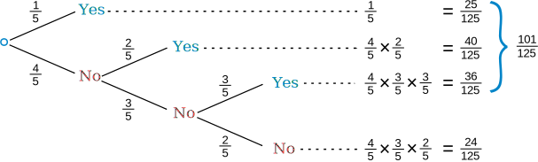
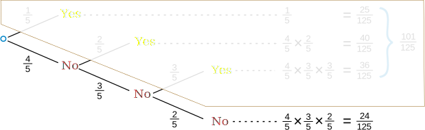

Shared Birthdays
This is a great puzzle, and you get to learn a lot about probability along the way ...
There are 30 people in a room ... what is the chance that any two of them celebrate their birthday on the same day? Assume 365 days in a year.
Some people may think:
"there are 30 people, and 365 days, so 30/365 sounds about right.
Which is 30/365 = 0.08..., so about 8% maybe?"
But no!
The probability is much higher.
It is actually likely there are people who share a birthday in that room.
|
Because you should compare everyone to everyone else. And with 30 people that is 435 comparisons. But you also have to be careful not to over-count the chances. |
I will show you how to do it ... starting with a smaller example:
Friends and Random Numbers
4 friends (Alex, Billy, Chris and Dusty) each choose a random number between 1 and 5. What is the chance that any of them chose the same number?
We will add our friends one at a time ...
First, what is the chance that Alex and Billy have the same number?
Billy compares his number to Alex's number. There is a 1 in 5 chance of a match.
As a tree diagram:

Note: "Yes" and "No" together make 1
(1/5 + 4/5 = 5/5 = 1)
Now, let's include Chris ...
But there are now two cases to consider (called "Conditional Probability"):
- If Alex and Billy did match, then Chris has only one number to compare to.
- But if Alex and Billy did not match then Chris has two numbers to compare to.
And we get this:

For the top line (Alex and Billy did match) we already have a match (a chance of 1/5).
But for the "Alex and Billy did not match" case there are 2 numbers that Chris could match with, so there is a 2/5 chance of Chris matching (against both Alex and Billy). And a 3/5 chance of not matching.
And we can work out the combined chance by multiplying the chances it took to get there:
Following the "No, Yes" path ... there is a 4/5 chance of No, followed by a 2/5 chance of Yes:
Following the "No, No" path ... there is a 4/5 chance of No, followed by a 3/5 chance of No:
Also notice that adding all chances together is 1 (a good check that we haven't made a mistake):
(5/25) + (8/25) + (12/25) = 25/25 = 1
Now what happens when we include Dusty?
It is the same idea, just more of it:

OK, that is all 4 friends, and the "Yes" chances together make 101/125:
Answer: 101/125
But here is something interesting ... if we follow the "No" path we can skip all the other calculations and make our life easier:

The chances of not matching are:
(4/5) × (3/5) × (2/5) = 24/125
So the chances of matching are:
1 − (24/125) = 101/125
(And we didn't really need a tree diagram for that!)
And that is a popular trick in probability:
It is often easier to work out the "No" case
(and subtract from 1 for the "Yes" case)
Example: what are the chances that with 6 people any of them celebrate their Birthday in the same month? (Assume equal months)
The "no match" case for:
- 2 people is 11/12
- 3 people is (11/12) × (10/12)
- 4 people is (11/12) × (10/12) × (9/12)
- 5 people is (11/12) × (10/12) × (9/12) × (8/12)
- 6 people is (11/12) × (10/12) × (9/12) × (8/12) × (7/12)
So the chance of not matching is:
(11/12) × (10/12) × (9/12) × (8/12) × (7/12) = 0.22...
Flip that around and we get the chance of matching:
1 − 0.22... = 0.78...
So, there is a 78% chance of any of them celebrating their Birthday in the same month
And now we can try calculating the "Shared Birthday" question we started with:
There are 30 people in a room ... what is the chance that any two of them celebrate their birthday on the same day? Assume 365 days in a year.
It is just like the previous example! But bigger and more numbers:
The chance of not matching:
364/365 × 363/365 × 362/365 × ... × 336/365 = 0.294...
(I did that calculation in a spreadsheet,
but there are also mathematical shortcuts)
And the probability of matching is 1 − 0.294... :
The probability of sharing a birthday = 1 − 0.294... = 0.706...
Or a 70.6% chance, which is likely!
So the probability for 30 people is about 70%.
And the probability for 23 people is about 50%.
And the probability for 57 people is 99% (almost certain!)
Simulation
We can also simulate this using random numbers. Try it yourself here, use 30 and 365 and press Go. A thousand random trials will be run and the results given.
You can also try the other examples from above, such as 4 and 5 to simulate "Friends and Random Numbers".
For Real
Next time you are in a room with a group of people why not find out if there are any shared birthdays?
Footnote: In real life birthdays are not evenly spread out ... more babies are born in July, August, and September. Also Hospitals prefer to work on weekdays, not weekends, so there are more births early in the week. And then there are leap years. But you get the idea.